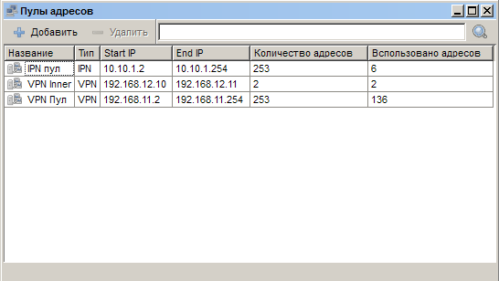
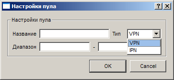

|
Интерфейс и логика |
Top Previous Next |
|
Раздел «IP-пулы» открывается
– через меню «Главное меню» → «IP пулы»;
Главное окно раздела составляет таблица с информацией об имеющихся пулах. Для каждого диапазона приводится название, тип (VPN или IPN), IP-адреса начала и конца диапазона, общее и занятое количество адресов в нем и число выданных адресов. В контекстном меню для каждой записи таблицы есть возможность изменить настройки пула («Настройки»), добавить либо удалить выбранный диапазон.

Для создания новых и удаления существующих диапазонов применяются кнопки «Добавить» и «Удалить». Поле быстрого поиска предназначено для выделения отдельных диапазонов по фрагменту названия.
При удалении пула адреса из его диапазона не должны быть назначены пользователям. В противном случае произойдёт удаление связанных с пулом абонентов.
Окно «Настройки пула»
Окно «Настройки пула» открывается при добавлении нового диапазона или изменении параметров выбранного («Настройки» в контекстном меню, двойной щелчок по строке с диапазоном в таблице).

В поле «Название» указывается имя пула, которое не может быть пустым. В полях «Диапазон» задаются начальный и конечный IP-адреса диапазона. Начальный адрес не может быть больше конечного и не может быть равен ему. Имейте в виду, что пересечение с другими диапазонами недопустимо.
Кроме того, в окне устанавливается «Тип» пула. VPN-пользователи не могут использовать пулы типа «IPN» и наоборот. This help file was created with an unregistered evaluation copy of Help & Manual. © EC Software. All rights reserved. This message will not appear if you compile this help file with the registered version of Help & Manual. |